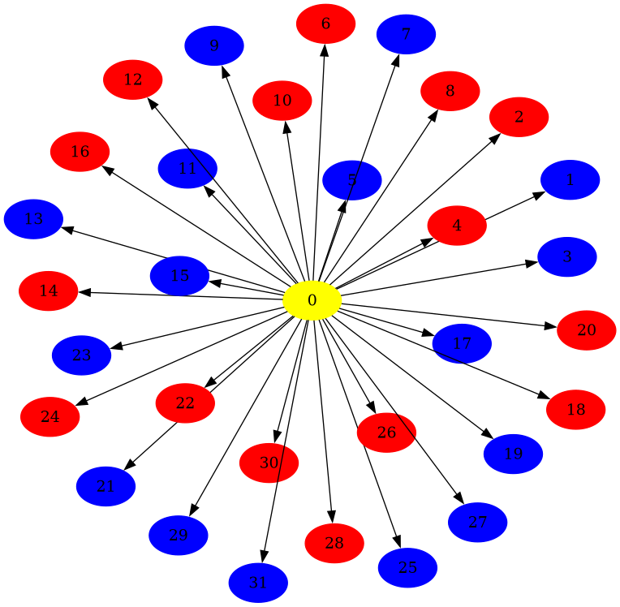

rustworkx.visualization.graphviz_draw¶
- graphviz_draw(graph, node_attr_fn=None, edge_attr_fn=None, graph_attr=None, filename=None, image_type=None, method=None)[source]¶
Draw a
PyGraphorPyDiGraphobject using graphvizNote
This requires that pydot, pillow, and graphviz be installed. Pydot can be installed via pip with
pip install pydot pillowhowever graphviz will need to be installed separately. You can refer to the Graphviz documentation for instructions on how to install it.- Parameters:
graph – The rustworkx graph object to draw, can be a
PyGraphor aPyDiGraphnode_attr_fn – An optional callable object that will be passed the weight/data payload for every node in the graph and expected to return a dictionary of Graphviz node attributes to be associated with the node in the visualization. The key and value of this dictionary must be a string.
edge_attr_fn – An optional callable that will be passed the weight/data payload for each edge in the graph and expected to return a dictionary of Graphviz edge attributes to be associated with the edge in the visualization file. The key and value of this dictionary must be a string.
graph_attr (dict) – An optional dictionary that specifies any Graphviz graph attributes for the visualization. The key and value of this dictionary must be a string.
filename (str) – An optional path to write the visualization to. If specified the return type from this function will be
Noneas the output image is saved to disk.image_type (str) – The image file format to use for the generated visualization. The support image formats are:
'canon','cmap','cmapx','cmapx_np','dia','dot','fig','gd','gd2','gif','hpgl','imap','imap_np','ismap','jpe','jpeg','jpg','mif','mp','pcl','pdf','pic','plain','plain-ext','png','ps','ps2','svg','svgz','vml','vmlz','vrml','vtx','wbmp','xdot','xlib'. It’s worth noting that while these formats can all be used for generating image files when thefilenamekwarg is specified, the Pillow library used for the returned object can not work with all these formats.method (str) – The layout method/Graphviz command method to use for generating the visualization. Available options are
'dot','twopi','neato','circo','fdp', and'sfdp'. You can refer to the Graphviz documentation for more details on the different layout methods. By default'dot'is used.
- Returns:
A
PIL.Imageobject of the generated visualization, iffilenameis not specified. Iffilenameis specified thenNonewill be returned as the visualization was written to the path specified infilename- Return type:
PIL.Image
import rustworkx as rx from rustworkx.visualization import graphviz_draw def node_attr(node): if node == 0: return {'color': 'yellow', 'fillcolor': 'yellow', 'style': 'filled'} if node % 2: return {'color': 'blue', 'fillcolor': 'blue', 'style': 'filled'} else: return {'color': 'red', 'fillcolor': 'red', 'style': 'filled'} graph = rx.generators.directed_star_graph(weights=list(range(32))) graphviz_draw(graph, node_attr_fn=node_attr, method='sfdp')
